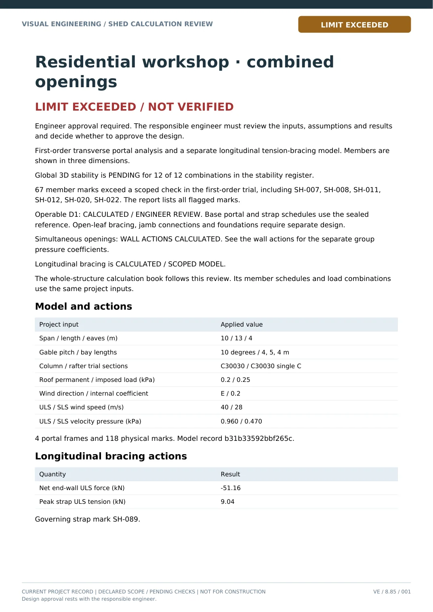

Door and window open together
The workshop has a 4.00 m² door on the east end and a 2.40 m² window on the south wall. In the individual portal study, D1 opens while W1 stays sealed. The combined wall study opens both leaves and uses separate internal coefficients of +0.80 and −0.60.
At Cpi −0.60 the wall forces sum to −46.166 kN along global Z at ultimate and −22.621 kN in service. These are wall field actions for the nominated east wind. The engineer must assess roof loads, reactions and the bracing and foundation load paths for simultaneous openings.
Loading the report…
